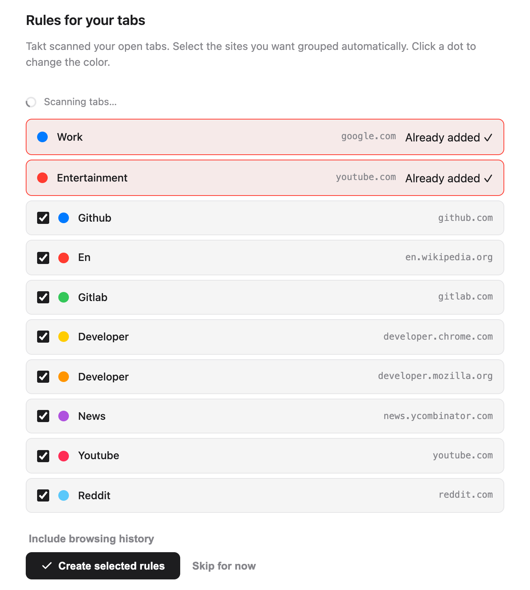
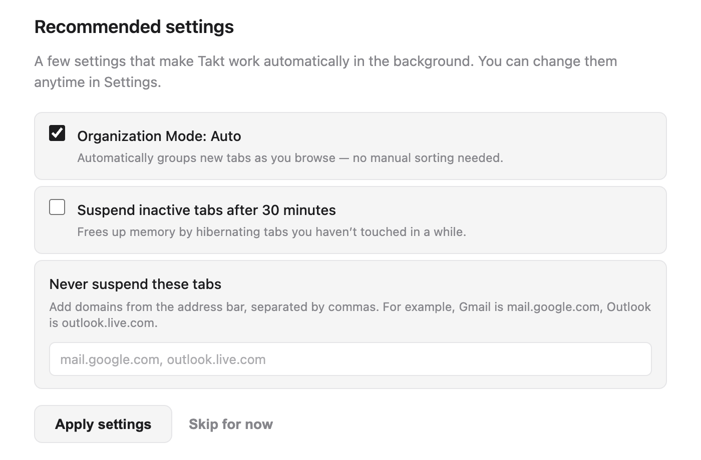
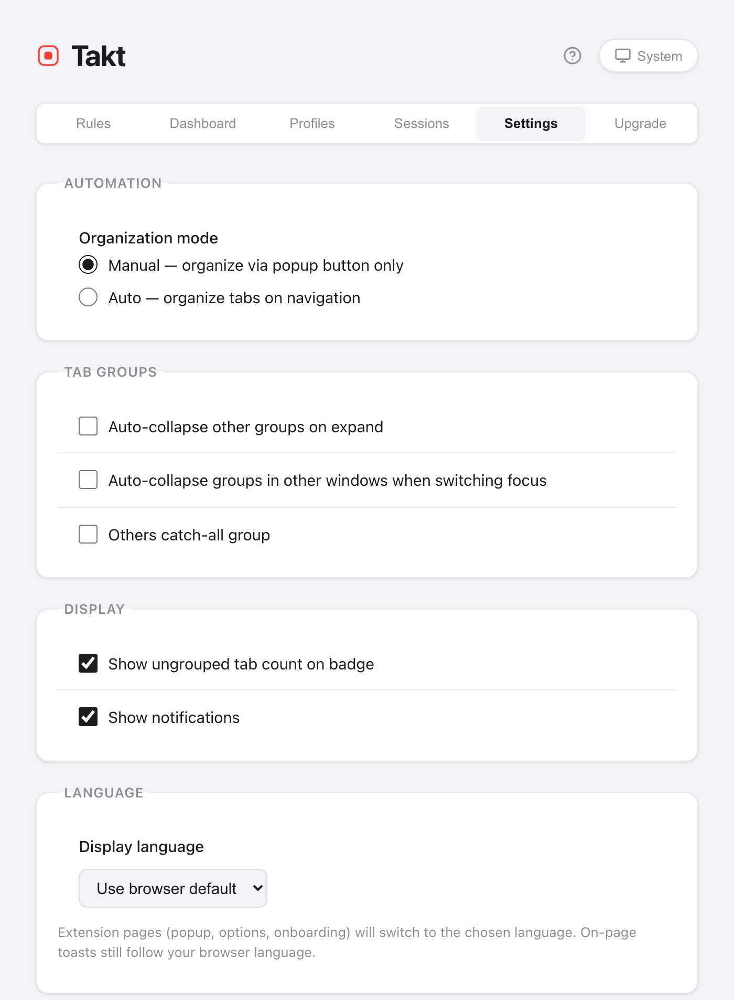

Short answer: the welcome page does the setup for you.
- It lists the sites in your open tabs. Each one you tick becomes a rule.
- Takt groups your tabs as soon as the rules exist.
- The popup holds daily controls. The options page holds rules, settings and plans.
- No account. The free plan includes 5 rules.
What happens when I install Takt?
Install Takt from the Chrome Web Store. Two things happen:
- Takt adds two starter rules: Work (google.com, blue) and Entertainment (youtube.com, red).
- A welcome page opens in a new tab.
Pin Takt from Chrome's puzzle-piece menu so the popup is one click away.
How do I pick my first rules?
The welcome page scans your open tabs and lists the 8 sites you have open most. The two starter rules sit on top, marked Already added.
- Untick any site you don't want grouped. Every site starts ticked.
- Click a colored dot to cycle through Chrome's 8 group colors.
- Click Create selected rules.
Takt creates the rules and groups your open tabs at once. The page reports the result, for example "Grouped 12 tabs into 4 groups."
On the free plan, the two starter rules count toward the 5-rule limit. So 3 more fit. Takt keeps the first 3 ticked sites and tells you how many it left out. Untick the rest first if you care which 3 you get.

Should I let Takt scan my browsing history?
It's optional. Click Include browsing history and Chrome asks you for the history permission. If you allow it, Takt adds your last 7 days of visits to the count, weighted by how often you visited each site, and rebuilds the list.
The count runs in your browser. Nothing is sent anywhere. Skip it and the suggestions come from your open tabs only.
Which recommended settings should I keep?
| Setting | On the welcome page | What it does |
|---|---|---|
| Organization Mode: Auto | Ticked | New tabs are grouped as they load. Unticked (Manual), Takt groups only when you click Group Tabs. |
| Suspend inactive tabs after 30 minutes | Unticked | Unloads tabs idle for 30 minutes to free memory. They stay in the tab strip. |
| Never suspend these tabs | Empty | Domains that are never unloaded, such as mail.google.com. |
Click Apply settings or Done and Takt saves the boxes exactly as ticked. You can change all three later in Settings.

Two more sections may appear. If Chrome's on-device AI isn't available, a button opens Chrome's AI settings, and the page checks again when you come back. The page also shows Quick Switch (Alt+Shift+Space), which is a Premium feature.
Can I see the welcome page again?
Yes. Open the options page, go to Settings → Support & Feedback and click Replay welcome tour. The page scans your tabs again, so you can add rules for sites you've started using since.
Which grouping mode should I choose?
Open the popup. The Home pane has a Grouping mode switch with four options:
| Mode | Pick it if |
|---|---|
| By Rules (default) | You want the same sites in the same named group every time. |
| By Category | You don't want to write rules. 20 fixed categories, such as Development and News. |
| By AI | You want groups by topic. Chrome's on-device model names them. |
| None | You want duplicate prevention and the other tools, but no grouping. |
Category and AI are free up to 5 groups. Details in group tabs by category or AI.
How do I write my own rule?
Click the gear icon in the popup to open the options page. On Rules, click New Rule, add a condition such as URL · Domain · github.com, name the group, pick a color and save. The full guide: how to automatically group tabs in Chrome.
Where does everything live in Takt?
The popup is for daily use. It has six panes:
| Popup pane | What's there |
|---|---|
| Home | The rule matching the current tab, grouping mode, quick actions such as Group Tabs and Collapse All |
| Rules | All rules, and a link to manage them |
| Sessions | Saved workspaces Premium |
| Hibernate | Tabs you've hibernated, ready to wake |
| Insights | Rule suggestions from sites you use a lot |
| Tabs | Every open tab by group, with a search box |

The options page is for setup. Its tabs are Rules, Dashboard (memory per tab and group, Premium), Profiles (Premium), Sessions (Premium), Settings and Upgrade.
How do I change Takt's language or theme?
Language. Go to Settings → Language → Display language. Pick English, Français, Español, Italiano, Deutsch or Português, or Use browser default. Your choice is independent of Chrome's own language. The popup, options page and welcome page switch; the page reloads to apply it. Small notices Takt shows inside web pages still follow Chrome's language.
Theme. Click the theme button in the header of the popup or the options page. It cycles through System, Light and Dark. System follows your operating system. Both choices are saved with your other settings.

What setup doesn't do
- Suggestions are site by site. The welcome page makes one domain rule per site. Write glob or regex rules yourself for patterns like "all pull requests" (Premium).
- Unknown sites stay ungrouped in Rules mode. Add a rule, or switch to Category or AI.
- The free plan stops at 5 rules. See what Free and Premium include.
Two minutes from install to grouped tabs.
Add Takt to Chrome, freeFAQ
Is Takt free?
Yes. The free plan includes 5 rules, Category and AI grouping up to 5 groups, duplicate prevention, auto-suspend and the popup's quick actions. Premium costs $3/month or $30/year.
Do I need an account to use Takt?
No. Takt has no account. Your rules and settings are stored in Chrome. See what Takt does with your data.
How do I open the welcome page again?
Options page → Settings → Support & Feedback → Replay welcome tour.
Can Takt use a different language from Chrome?
Yes. In Settings → Language, pick one of 6 languages. The popup, options and welcome pages switch; in-page notices still follow Chrome's language.